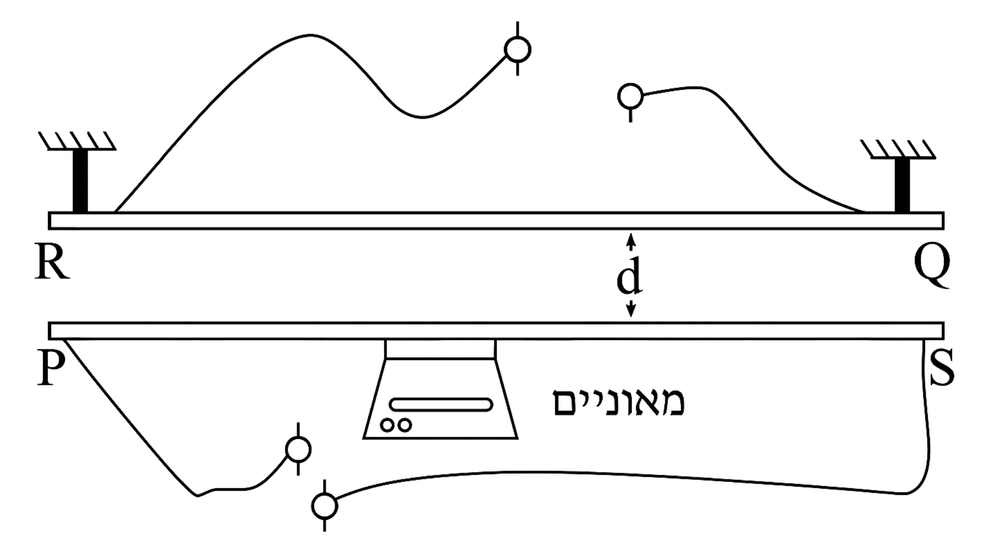
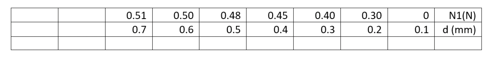

תלמידים עורכים ניסוי במערכת המוצגת בתרשים. המערכת מורכבת משני מוטות
מוליכים \(RQ\) ו-\(PS\), ממאזניים המכוילים בניוטונים ומתילים. המוטות נמצאים אחד מעל השני במישור אנכי, הם מקבילים זה לזה וארוכים. האורך \(L = 1m\) של כל מוט גדול בהרבה מהמרחק \(d\) שביניהם.
המוט \(RQ\) מוחזק במקומו ודרכו זורם זרם קבוע בעוצמתו ובכיוונו \(I = 10A\).
המוט \(PS\) שמסתו \(m\) מונח על המאזניים. מזרימים דרך המוט \(PS\) זרם \(I_1 = 30A\) מ-\(P\) ל-\(S\). המאזניים מורים כוח \(N_1\), כך ש-\(N_1 < mg\).

א.סרטטו את תרשים הכוחות הפועלים על המוט \(PS\). (5 נקודות)
ב.מה כיוון הזרם העובר במוט \(RQ\)? נמקו. (4 נקודות)
ג.פתחו ביטוי למרחק \(d\) בין שני המוטות באמצעות \(I, I_1, m, L, N_1\). במידת הצורך השתמשו בקבועים פיזיקליים. (6 נקודות)
ד.במהלך הניסוי התלמידים שינו מספר פעמים את המרחק בין המוטות ומדדו את הוריית המאזניים.
העתיקו את הטבלה למחברתכם. בחרו משתנה חדש, התלוי במרחק \(d\), כך שיתקבל קשר לינארי בינו לבין הוריית המאזניים \(N_1\). הוסיפו לטבלה שורה עבור המשתנה שבחרתם והשלימו את ערכיו (שימו לב ליחידות המידה). סרטטו גרף לינארי של \(N_1\) כפונקציה של המשתנה החדש שבחרתם. (9.33 נקודות)

ה.מה המשמעות הפיזיקלית של נקודות החיתוך של הגרף עם הצירים? (4 נקודות)
ו.היעזרו בגרף ומצאו את מסת המוט ואת קבוע הפרמיאביליות של ריק (\(\mu_0\)). (5 נקודות)